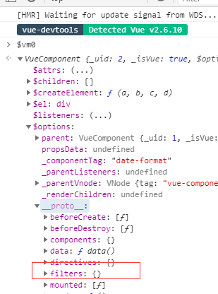

原文连接:https://www.cnblogs.com/yfrs/p/vuefilter.html
换个角度使用VUE过滤器
过滤器在Vue中的主要用于文本格式化，如小写转大小，日期格式化等操作。官方对这个功能介绍也很简单，不过确实很简单，就一个函数而已。但最近在做两款APP时，遇到一些特殊的需求。然后就对vue中的filter一些用法结合源码好好的梳理了下。下边我们以一个日期格式化展开讨论。本文配套的demo可以微信关注公众号【小院不小】回复vuefilter获得。
1. 定义一个日期格式化函数
都9012了，我们就采用 ES Module的写法，在vue初始化的项目src的文件中新建一个filters文件夹，并在其中添加DateFmt.js文件，代码如下
// wx:46488492
export function DateFmt(date, fmt) {
if (date == null) return null;
var o = {
"M+": date.getMonth() + 1, // 月份
"d+": date.getDate(), // 日
"h+": date.getHours(), // 小时
"m+": date.getMinutes(), // 分
"s+": date.getSeconds(), // 秒
"q+": Math.floor((date.getMonth() + 3) / 3), // 季度
"S": date.getMilliseconds()
};
if (/(y+)/.test(fmt))
fmt = fmt.replace(RegExp.$1, (date.getFullYear() + "").substr(4 - RegExp.$1.length));
for (var k in o)
if (new RegExp("(" + k + ")").test(fmt))
fmt = fmt.replace(RegExp.$1, (RegExp.$1.length == 1) ? (o[k]) : (("00" + o[k]).substr(("" + o[k]).length)));
return fmt;
}2. 使用过滤器 DateFmt
定义好函数后，我们采用全局注册filter的方式。在main.js中使用import { DateFmt } from '@/filters/DateFmt.js' 导入我们上边定义的函数。 使用Vue.filter("DateFmt", DateFmt) 完成filter全局注册。
在components文件夹中，添加我们的测试组件DateFormat.vue,在该文件template>div节点下输入{{new Date()|DateFmt('yyyy-MM-dd hh:mm:ss')}} 然后在app.vue引入我们刚新添加的组件，运行，你就会在看到当前日期已经按照我们需要的格式显示在网页上。是的，就是这么简单，那完了么？
3. 在JS中使用 DateFmt
好奇的朋友会发现，我们定义的filter都是在template中使用的，那我如何在js代码中使用呢？当然，在开发这两个app期间，减少数据转换的次数，有了这样的需求。
3.1 在组件页面导入函数
回到开头，我们强调了一下，过滤器其实就是一个函数。既然是函数，那引入就好了。所以在我们最初建立 DateFormat.vue 单文件组件的<script>块中使用import { DateFmt } from '@/filters/DateFmt.js'导入我们的函数。代码如下：
<script>
// wx:46488492
import { DateFmt } from '@/filters/DateFmt.js';
export default {
data(){
return{
curDateImportFilter: DateFmt(new Date(), 'yyyy-MM-dd hh:mm:ss')
}}}
</script>在我们<template>中新加一个元素，并绑定 curDateImportFilter属性，运行 npm run serve 回到浏览器，你就会看到两个格式化日期。这样好吗？我们多了一个import , 虽然实现了，但觉得不够好。
3.2 使用Vue.filter 返回过滤器
如果我们仔细看官方文档，就会发现官说明了，通过 Vue.filter("filter")返回定义的函数 ,所以Vue.filter不仅可以注册，还可以返回。
我们继续在data中添加属性 :
curDateVueFilter: Vue.filter("DateFmt")(new Date(), 'yyyy-MM-dd hh:mm:ss')通过上边的步骤绑定该属性，你会在浏览器上看到三个格式化好的日期。要使用Vue.filter,我们不得不额外的导入import Vue from 'vue'。跟上边一样，虽然实现了，但不够好。
3.3 使用实例属性$options
在vue组件，每个组件都有各自的属性，这些属性大多挂载中属性 $options中，在chrome浏览器打印$vm0信息，我们就找到filter的信息。这里科普一下，在安装vue开发者工具后$vm0表示我们当前选择的组件，结果如下图所示：

从图形上看，当前组件的filters为一个对象，并不能直接找到，不过展开至__proto__原型上看到了我们的DateFmt方法。好了现在我们在继续在data中添加属性
curDateOptFilter: this.$options.filters.DateFmt(new Date(), 'yyyy-MM-dd hh:mm:ss')是的，采用这个方式，就不用再引入vue或者函数了，跟直接在template使用一样。简洁方便，感觉好多了。在深入一点，通过调试我们就会发现 Vue.filter 是调用options.filters原型上的方法，如下图所示

4. 总结
再简单的功能，也有你想不到的用法。做开发，还是要会发散。本来这篇文章还想分享一下 vue 中scope css穿透功能。为了方便阅读，就且听下回分解吧。
欢迎感兴趣的朋友关注我的微信订阅号"小院不小"，或者点击下方的二维码关注。我将多年开发中遇到的难点，以及一些有意思的功能，体会都会一一发布到我的订阅号中

闲来无事，采用cocos creator开发了一个小游戏，感兴趣的朋友一个可以来玩玩

有喜欢聊技术朋友也欢迎入群，若二维码失效可加我微信回复前端